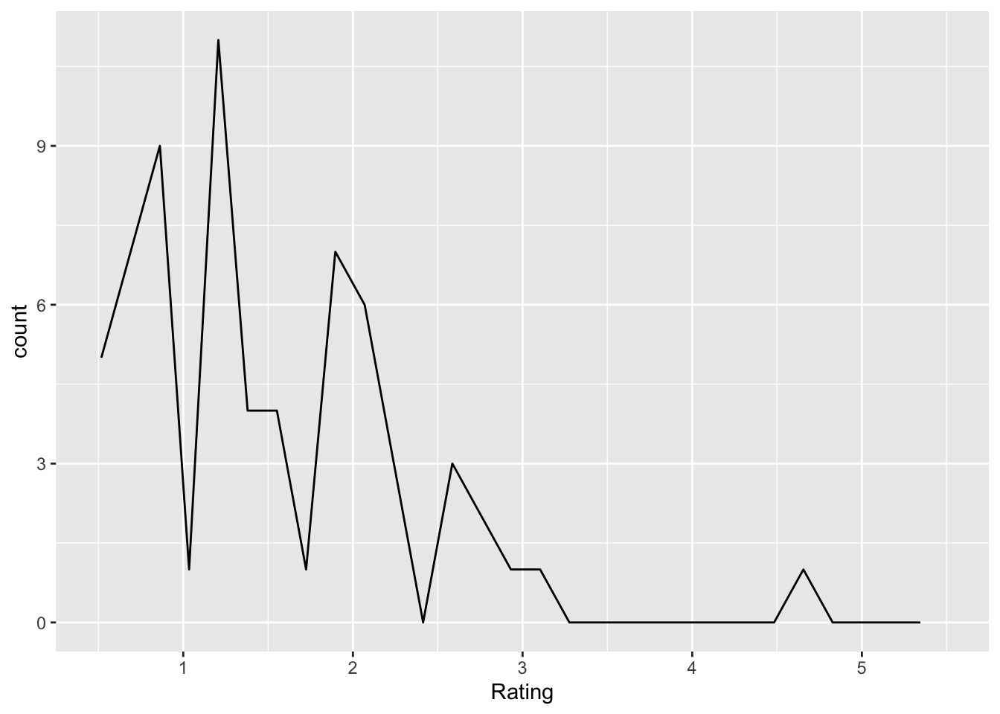

these_vars <-names(df)res <-invisible(lapply(these_vars, return_section, data = df))cat(unlist(res), sep ="\n")
Responses for: a
Figure 6.2: Distribution of responses to a
Q: ‘question for variable a’
Responses for: b

Figure 6.3: Distribution of responses to b
Q: ‘question for variable b’
Responses for: c
Figure 6.4: Distribution of responses to c
Q: ‘question for variable c’
Post hoc thoughts
The keys to getting this to work were as follows:
In return_chunk(), generate separate text strings for the header (chunk_hdr), plot chunk (plot_chunk), and long question. See also the sequence for building a suitable string for fig.cap.
Combine these separate pieces within knitr::knit_child() with the text= parameter.
In my_freq_plot(), use the aes(.data[[var]]) syntax to turn the string value for var into an unquoted variable in the dataset.
Bottom line: It’s always better to bite off smaller chunks.
Doyen, Stéphane, Olivier Klein, Cora-Lise Pichon, and Axel Cleeremans. 2012. “Behavioral Priming: It’s All in the Mind, but Whose Mind?”PloS One 7 (1): e29081. https://doi.org/10.1371/journal.pone.0029081.